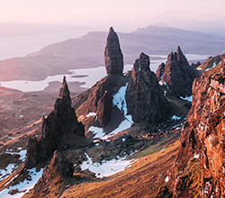

Old Man of Storr
Few places on the Isle of Skye conjure more magic than the Old Man of Storr. This pinnacle of stone in the hills of The Storr, can be seen from miles away, almost as soon as you leave Portree or as soon as you approach it. It's visible, it's stunning and it's one of the best walking routes in Scotland. Or, at least, one of the most mythical.
City of Portree
The name of Portree comes from the Gaelic "Port-an-Righ" which in Spanish translates as "King's Port". Formerly known as Kiltraglen, this town is believed to have changed its name after King James V of Scotland undertook a persuasive voyage to the island accompanied by his fleet of warships. There he tried to unite the clans of MacLeods and MacDonalds in order to get them to support his interests.

Dunvegan Castle
The Castle is located 1 mile from the small town of Dunvegan, on the west coast of the Isle of Skye. It is built on a raised rock overlooking Loch Dunvegan, one of the lochs that are so prevalent in Scotland. For 800 years the Castle has been the ancestral home of Clan MacLeod. It is currently the residence of the Clan Chief. The castle stands on top of a rock 1.5 km from the small town of Dunvegan and is...